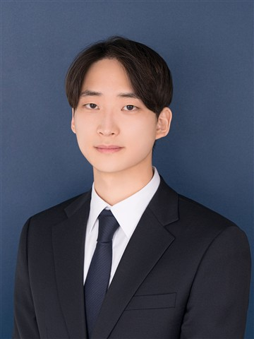

 |
장시영서비스 기획자
jsyoung456@gmail.com | 010-3224-9483 |
SUMMARY
사용자 행동 데이터와 정책, 시스템 구조를 연결하여 서비스를 '개선 가능한 상태'로 설계하는 기획자입니다.
운영과 기획 경험을 바탕으로 사용자 행동과 서비스 구조 간의 관계를 분석하고, 퍼널 설계 및 데이터 수집 구조 정의를 통해 데이터 기반 의사결정 환경을 구축해왔습니다.
최근에는 LLM 기반 VOC 분석 및 AI 협업 구조 설계를 통해 AI 기술을 실제 서비스에 적용하기 위한 구조 설계 및 검증 경험을 쌓고 있습니다.
EXPERIENCE
Natris / LULU.AI | Product Manager
서비스 구조 및 정책 설계 담당
- 사용자 상태 기반 인증/계정/환불 정책 구조 설계
- 사용자 여정 기반 UX 플로우 및 정보 구조 설계
- 기능 목적 및 예외 흐름을 포함한 PRD 작성
- 사용자 행동 이벤트 및 속성 정의를 통한 데이터 수집 구조 설계
- Claude Code 기반 프로토타이핑 도입으로 기획-개발 커뮤니케이션 효율 개선
NSUSLAB Korea | Operations
데이터 기반 운영 구조 개선 및 수익성 관리
- 토너먼트 참여율 및 수익 구조 데이터 분석
- 손실 집중 구간(시간대/참가비) 식별 및 구조 개선
- 해외 지사 및 파트너와 협업하여 운영 구조 안정화
성과: 전년 대비 주요 KPI (참가자 수) 유지하며 손실 50% 감소
Me2on | Operations
글로벌 서비스 운영 및 이슈 대응
- Fullhouse Casino 운영 및 이슈 대응 프로세스 수행
- 해외 지사 협업을 통한 운영 현황 공유 및 문제 해결
PROJECT
AX 기반 기획 협업 구조 재설계
- 문서 분산으로 인한 정합성 문제 정의
- UI 패턴 컴포넌트화 및 프롬프트 기반 생성 구조 설계
- PRD/정책/프로토타입 GitHub 단일 저장소 통합
- AI 기반 문서 정합성 검토 프로세스 구축
성과: 문서 작성 시간 60% 단축 / 팀 표준 프로세스로 채택
사용자 인증 및 계정 정책 구조 설계
- 사용자 상태 기반 인증 흐름 및 분기 구조 설계
- 비밀번호 재사용 제한 등 보안 정책 정의
- 인증/계정 정책 일관성 확보 및 QA 기준 정립
SIDE PROJECT
LLM 기반 VOC 분석 구조 설계
- 키워드/별점 기반 VOC 분석 한계 → 구조적 문제로 재정의
- 사용자 여정 / 문제 유형 / 감정 기반 다차원 분류 체계 설계
- 신뢰도 기반 자동 분류 + 수기 검수 분리 구조 설계
- 비용과 정확도를 고려한 AI 적용 방식 검증
성과: 실무 적용 가능한 VOC 분석 구조 설계 및 검증 인사이트 확보
EDUCATION
- 방송통신대학교 데이터, 통계학과 | 2023.03 - Present
- University of South Dakota Nursing | 2015.09 - 2016.08
CERTIFICATION
- SQLD
- ADsP
LANGUAGE
- 영어 (업무 및 회의 가능)